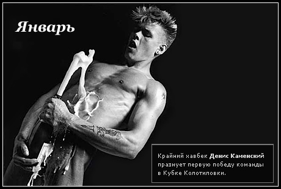

Команды ← FC Zivju Fileja
Созданная литовским рыбным магнатом Pasaulas Shprotas команда рыбного филе несёт в себе светлый и полезный рыбий жир. Рыбий жир Pasaulas Shprotas Zhiras расфасованный в сосательные капсулы отлично ставит удар с правой, стенку и общую игровую форму. Молодая команда успешно играет в низшей лиге латвийского чемпионата и шаг за шагом стремится в верхние эшелоны.
Своего успеха команда достигает за счёт полезных витаминов и сплочёной игры молодых игроков под руководством капитана команды Василия "хервамслева" Немкова и приглашённого сербского наставника Дарко "стареюбилять" Оцоколича.
Команда дебютировала в прошлом розыгрыше Кубка Колотиловки (Старуха Шапокляк) и оказалась там, где ей предрекал место нострадамус — третьей с конца. В текущем розыгрыше мы непременно улучшим этот показатель.
Сосите рыбий жир!

Один из лучших игроков команды прошлого розыгрыша
запечатлён на туалетном календаре фан клуба команды.